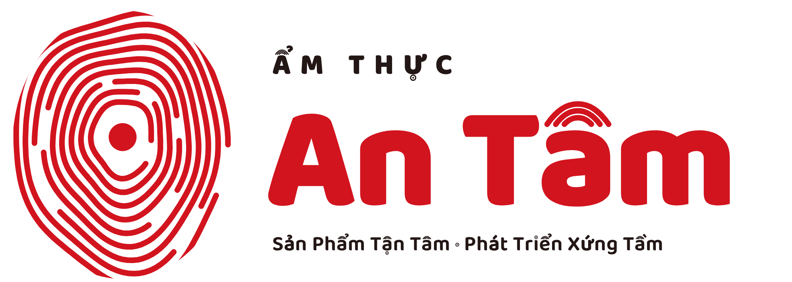

Công thức nấu ở nhà
Wrap gà 10 phút
Ảnh thật: wrap gà cắt đôi, nền gỗ hoặc giấy kraft, ánh sáng ấm
1
Hâm bánh trên chảo khô cho mềm
2
Xếp rau, gà xé và sốt lên bánh
3
Cuộn chặt, cắt đôi, dùng ngay
Nguyên liệu: bánh tortilla, gà xé, rau, sốt [Cần điền: định lượng theo bài viết]

Lưu bài để nấu cuối tuần
antamfoods.com